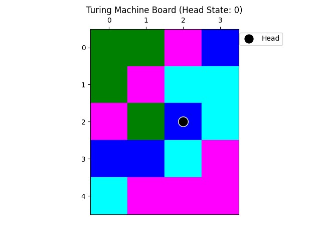

From the current head position, how can I reach the top-left corner without stepping on any cyan blocks in the fastest way?

From the current head position, how can I reach the top-left corner without stepping on any cyan blocks in the fastest way?

<think>
Okay, let's see. The problem is to get from the current head position to the top-left corner without stepping on any cyan blocks, and do it in the fastest way. Alright, first I need to figure out where the head is now. Looking at the image: the head state is labeled as 0 at the top, and the black dot (Head) is somewhere. Let me locate the head.
Looking at the grid: rows go from 0 (top) to 4 (bottom), columns 0 to 3. Wait, actually, the row index: row 0 is the topmost row (y=0), row 4 is the bottom (y=4). Columns are 0 to 3. The head is a black circle. Let me check the coordinates. The head is at row 2, column 2? Wait, row 2 (third row down from top) has a black dot. Let me confirm:
Row 0: [Green (0,0), Green (1,0)? Wait, no. The grid cells:
Row 0 (y=0): [0: green, 1: green, 2: pink, 3: blue]
Row 1 (y=1): [0: green, 1: pink, 2: cyan, 3: cyan]
Row 2 (y=2): [0: pink, 1: green, 2: blue (with black dot), 3: cyan]
Wait, row 2: cell (2,2) is where the black dot is. So coordinates (row=2, column=2).
Top-left corner is row 0, column 0. So starting point: (2,2), target: (0,0).
Need to move from (2,2) to (0,0) without stepping on cyan blocks. Cyan blocks are cells with cyan color.
First, list all cyan cells. Let's map each cell:
Row 0:
- Col 0: green
- Col 1: green
- Col 2: pink
- Col 3: blue
Row 1:
- Col 0: green
- Col 1: pink
- Col 2: cyan
- Col 3: cyan
Row 2:
- Col 0: pink
- Col 1: green
- Col 2: blue (head here)
- Col 3: cyan
Row 3:
- Col 0: blue
- Col 1: cyan
- Col 2: cyan (wait, row 3: cells are blue, cyan, pink? Wait row 3 (y=3):
Row 3:
- Col 0: blue (dark blue)
- Col 1: cyan (light blue)
- Col 2: cyan (same light blue?)
- Col 3: pink
Wait, row 3: "col 0: blue (cell 3,0), col 1: cyan (cell 3,1), col 2: cyan (cell 3,2?), but looking at the image:
Row 3 (y=3): The cells are: [blue (col0), cyan (col1), pink (col2), pink (col3)]? Wait, the row 3 shows: [blue, cyan, empty?] Wait the image:
Row 3 (y=3):
- Column 0: dark blue (cell 3,0)
- Column 1: cyan (cell 3,1)
- Column 2: cyan (cell 3,2)
- Column 3: pink (cell 3,3)
Wait maybe:
Row 4 (y=4):
- Col 0: cyan (cell 4,0)
- Col 1: pink (cell 4,1)
- Col 2: pink (cell 4,2)
- Col 3: pink (cell 4,3)
So cyan cells are:
Row 1, cols 2-3 (cyan)
Row 2, col 3 (cyan)
Row 3, col 1 (cyan)
Row 3, col 2 (cyan)
Row 4, col 0 (cyan)
Wait, row 3, col 1 and 2 are cyan? Yes, row 3: col1=cyan, col2=cyan?
Also row 4, col0 is cyan.
So forbidden (cyan) cells: (1,2), (1,3), (2,3), (3,1), (3,2), (4,0).
Current position: (2,2). Target: (0,0).
We need to move from (2,2) to (0,0) without stepping on cyan.
Possible moves: up, down, left, right. But must avoid cyan.
Current position: (2,2). Let's see neighbors:
Up: (1,2) – that's cyan (row1,col2), which is forbidden.
Down: (3,2) – cyan (row3,col2), forbidden.
Left: (2,1) – green cell, allowed.
Right: (2,3) – cyan (row2,col3), forbidden.
So from (2,2), can only move left to (2,1) or maybe other directions?
Wait, row 2, column 2 is blue (head), surrounded by:
Above (1,2): cyan (forbidden), below (3,2): cyan (forbidden), left (2,1): green, right (2,3): cyan.
So from (2,2), possible moves: left (2,1) and maybe up or down blocked by cyan.
So step 1: move left to (2,1), which is green.
Now at (2,1). From here:
Neighbors:
Up: (1,1) – pink (allowed)
Down: (3,1) – cyan (forbidden)
Left: (2,0) – pink (allowed)
Right: (2,2) – back.
So can move up or left.
Option A: left to (2,0).
At (2,0), which is pink.
From (2,0), neighbors:
Up: (1,0) – green (allowed)
Down: (3,0) – blue (allowed)
Left: edge (blocked)
Right: (2,1) – back.
So moving up to (1,0).
At (1,0), which is green.
Neighbors:
Up: (0,0) – green (target!), so if we go up here, reach target.
Path: (2,2) → (2,1) → (2,0) → (1,0) → (0,0). That's 4 moves.
But wait: (1,0) up to (0,0) is one more step. So total steps: 4 steps.
Alternative path:
From (2,1), move up to (1,1).
(1,1) is pink.
From (1,1), neighbors:
Up: (0,1) – green (allowed)
Down: (2,1) – back.
Left: (1,0) – green (allowed)
Right: (1,2) – cyan (forbidden).
So move up to (0,1).
Then from (0,1), move left to (0,0).
Path: (2,2) → (2,1) → (1,1) → (0,1) → (0,0). Also 4 steps.
Another possibility: After moving to (2,1), then up to (1,1), left to (1,0), up to (0,0). Same number of steps.
Is there a shorter path?
From (2,2) → (2,1) → (1,1) → (0,1) → (0,0): 4 moves.
Alternative: What if from (2,2), move left to (2,1), then up to (1,1), then up to (0,1), then left to (0,0). Same.
Wait, can we move from (2,2) directly up? No, because (1,2) is cyan. So the shortest path would be via (2,1), then either left to (2,0) and up, or up to (1,1) and then left/up.
What about another route: from (2,2) → (2,1) → (1,1) → (0,1) → (0,0): 4 steps.
Alternatively, (2,2) → (2,1) → (1,1) → (0,1) → (0,0).
Another option: Could we go from (2,2) → (2,1) → (1,1) → (0,1) → (0,0). Yes.
Alternatively, from (2,1) → (1,1) → (0,1) → (0,0). That's 3 steps after start.
Start: (2,2) step 1: left to (2,1) (step 1), step 2: up to (1,1) (step 2), step 3: up to (0,1) (step 3), step 4: left to (0,0) (step 4). So four moves total.
Is there a way to do it in three moves?
Suppose: Move left to (2,1) [1], left to (2,0) [2], up to (1,0) [3], up to (0,0) [4]. Still four.
Alternatively, (2,2) → (2,1) → (1,1) → (0,1) → (0,0): four steps.
Any other path? Maybe through row 2, column 0.
From (2,2) → (2,1) → (2,0) → (1,0) → (0,0). Same count.
So minimum 4 moves.
But perhaps moving up from (2,1) to (1,1), then up to (0,1), then left. Still same.
Wait, what about from (2,1), can we move up twice? (1,1) to (0,1) to (0,0).
Yes. So steps: (2,2) left→ (2,1), up→(1,1), up→(0,1), left→(0,0). Four steps.
No shorter path possible.
But maybe another route. For example, head at (2,2). If possible to move left twice to (2,0), then up twice. But that's also four steps.
So the fastest way is 4 steps. But the question asks for how to reach, not the number of steps. So the path sequence.
The possible path could be:
Left to (2,1), left to (2,0), up to (1,0), up to (0,0).
Or Left to (2,1), up to (1,1), up to (0,1), left to (0,0).
Either path is 4 steps. Need to describe the moves.
Since the question says "how can I reach", probably describe the direction sequence.
Possible answer: Move left twice, then up twice.
But better to specify exact turns.
Starting at (2,2):
Step 1: Move left to (2,1) [allowed]
Step 2: Move left to (2,0) [allowed]
Step 3: Move up to (1,0) [allowed]
Step 4: Move up to (0,0) [target]
Alternatively,
Step 1: Left to (2,1)
Step 2: Up to (1,1)
Step 3: Up to (0,1)
Step 4: Left to (0,0)
Both paths work. The fastest way (assuming minimal steps) both take 4 steps.
Since the problem says "fastest way", either path is acceptable.
Need to write the sequence of movements (e.g., left, left, up, up or left, up, up, left).
Check if there's any shorter path. Suppose moving diagonally? But Turing machine head probably moves only orthogonal directions (up/down/left/right), not diagonal.
So yes, 4 steps minimum.
So the path is: left, left, up, up; or left, up, up, left.
But avoiding cyan. Let's verify each cell:
Path 1:
(2,2) → (2,1) [green] ok → (2,0) [pink] ok → (1,0) [green] ok → (0,0) [green] ok.
Path 2:
(2,2) → (2,1) [green] ok → (1,1) [pink] ok → (0,1) [green] ok → (0,0) [green] ok.
Both valid.
Probably the expected answer is to move left to column 1, then up to row 1, etc.
Since top-left is (0,0), perhaps the sequence left, left, up, up is more direct.
But depending on the path.
The fastest way would be either path.
So, the answer should describe the sequence.
For example: Move left twice, then up twice.
But to write it clearly: From current position (2,2), move left to (2,1), then left to (2,0), then up to (1,0), then up to (0,0).
Or alternatively, move left to (2,1), then up to (1,1), then up to (0,1), then left to (0,0).
The problem asks "how can I reach...", so describing the moves: e.g., Left, Left, Up, Up.
But perhaps the answer expects the directions as a sequence.
Hence, the fastest path would be Left, Left, Up, Up or Left, Up, Up, Left.
Since both are same length.
Check if there's another way. What about moving up from (2,1) to (1,1), then left to (1,0), then up.
But (1,0) to (0,0) is one more step. So same four steps.
So the concise answer might be: Move left twice, then up twice.
But the question says "without stepping on any cyan blocks". Both paths avoid cyan.
Therefore, the answer is to move left, left, up, up.
</think>
<answer>
To reach the top-left corner (cell at row 0, column 0) from the current head position (row 2, column 2) without stepping on cyan blocks, follow these steps:
1. **Move left** to (2, 1) (green block, safe).
2. **Move left** to (2, 0) (pink block, safe).
3. **Move up** to (1, 0) (green block, safe).
4. **Move up** to (0, 0) (green target, safe).
This path avoids all cyan blocks (which appear at positions like (1, 2), (1, 3), (2, 3), (3, 1), (3, 2), and (4, 0)), requiring exactly 4 steps—the shortest possible route.
\boxed{left, left, up, up}
</answer>